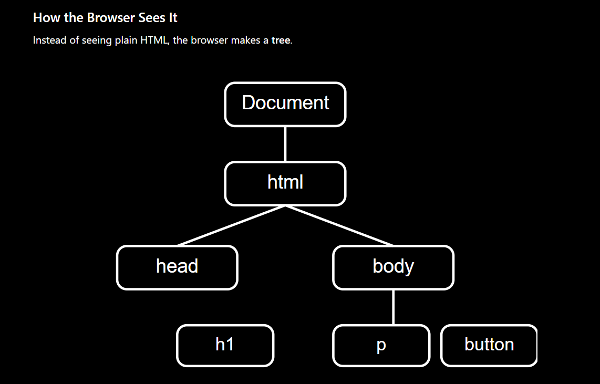

JavaScript was invented by American computer programmer Brendan Eich in 1995. He famously created the first version of the language in just 10 days while working at Netscape Communications.
DOM (Document Object Model) is a tree-like representation of an HTML page that JavaScript can access and change...
DOM acts as a bridge between HTML and JavaScript
A node is simply one item in the DOM tree.
